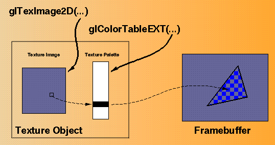

The paletted texture extension, EXT_paletted_texture, lets you define a palette to look up texels before filtering; in effect, you pre-filter a texture color table. The extension defines new texture formats and new functions to support the use of paletted textures in OpenGL. The extension provides these features:
To define a paletted texture, you provide both a palette of colors and a set of image data that is composed of indices into the palette. Because the paletted texture requires both pieces of information, it increases the work required to define a texture. This is offset by the fact that you can reduce the overall amount of texture data dramatically by factoring redundant information out of the logical view of the texture and placing it in the palette.

Figure 3-3 : Paletted Texture Environment
Paletted textures provide several advantages over full-color textures:
Consider a source texture that has only 256 distinct colors in a 256-by-256 pixel grid. Full-color representation requires three bytes per pixel, taking 192KB of texture data. If you put the distinct colors in a palette, only eight bits are required per pixel, reducing the 192KB to 64KB plus 768 bytes for the palette. If you add an alpha channel to the texture, the full-color representation increases by 64KB while the paletted version increases only by 256 bytes. This reduction in required space is particularly important for systems where texture space is limited. Software implementations also benefit from the fact that less memory is required.
Consider a driving simulation with heavy traffic on the road where many cars are similar but use different color schemes. If full-color textures are used, a separate texture is needed for each color scheme. If paletted textures are used, the same basic index data can be reused for each car, with a different palette to change the final colors.
To work with paletted textures, call glTexImage*() with one of the following tokens as the internalformat parameter:
COLOR_INDEX1_EXT
COLOR_INDEX2_EXT
COLOR_INDEX4_EXT
COLOR_INDEX8_EXT
COLOR_INDEX12_EXT
COLOR_INDEX16_EXT
You must also define the palette by calling glColorTableEXT().